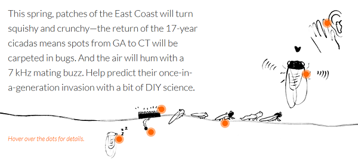

번호: 12.html
이름: 손인하
전공: 신문방송학부
케이스를 고른 이유를 적어주세요.
WNYC Cicada Tracker
Crowd-based arduino sensing for cicada tracking

프로젝트 설명:
글쓰기
글쓰기
글쓰기
Watch this YouTube Video:
샘플복붙 이 프로젝트에서 찾은 인사이트는 다음과 같다:
샘플 복붙 아두이노로 직접 측정할 수 있는 장비를 직접 만든 것 - 그것도 매우 싸게!
샘플 복붙 사람들의 인풋이 모이면 많은 양으 데이터를 축적할 수 있다는 것
샘플 복붙 센서의 측정 그 자체가 뉴스가 된다는 것!
샘플 복붙 아두이노로 직접 측정하기의 의미는 ...
샘플 복붙사람들의 인풋을 모으기의 의미는 ...
샘플 복붙 센서로 저널리즘 해보기에 의의를!